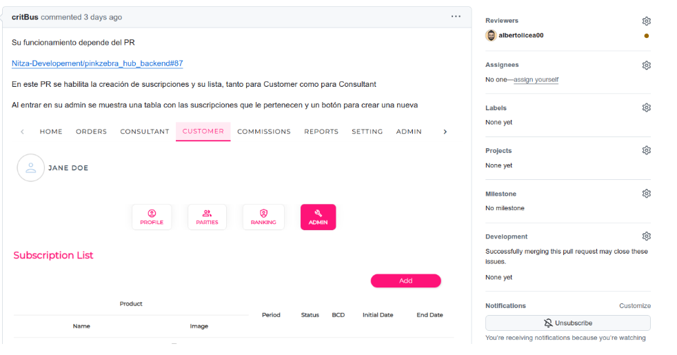

Guía de Bienvenida - Desarrollo de Software
4- Flujo de Trabajo
4.1 Gestión de Tareas.
- Flujo de trabajo
Para mas informacion vicitar el documento Flujo de trabajo
-
Registrar el tiempo en Odoo:
- Crear una entrada en el parte de tiempos

- Detallar el trabajo realizado
- Especificar el tiempo dedicado
- Debemos hacer coincidir la descripción en los partes de tiempo con los mensajes de los commits

4.2 Gestión del Pull Request.
Caso A: Código Listo para Revisión 1. Preparar archivos modificados:
git push origin feature/nombre-descriptivo-tarea
-
Crear Pull Request en la plataforma (GitHub/Azure):
- Título descriptivo
- Descripción detallada de los cambios
- Solicitar revisores específicos
- Agregar imágenes si hay modificaciones en el Frontend

Caso B: Revisión Temprana 1. Si se necesita feedback antes de completar la tarea: * Subir el trabajo en progreso * Crear PR marcado como "Draft" o "WIP" (Work In Progress) * Especificar en la descripción que es para revisión temprana * Detallar las partes que necesitan revisión
4.3 Proceso de Revisión
- Atender los comentarios de la revisión
- Para cada cambio solicitado:
- Realizar las modificaciones necesarias
- Crear nuevo commit
- Registrar el tiempo en Odoo
- Actualizar la rama remota:
git push origin feature/nombre-descriptivo-tarea
4.4 Finalización
- Una vez aprobado el PR:
- Asegurarse de que la rama está actualizada con main
- Resolver conflictos si existen
- Realizar merge siguiendo la política del equipo
4.5 Control de Calidad
- Una vez aprobado el PR:
4.6 Reuniones.
- Dos reuniones semanales por Google Meet
- Participación en llamadas con clientes por Teams cuando sea necesario